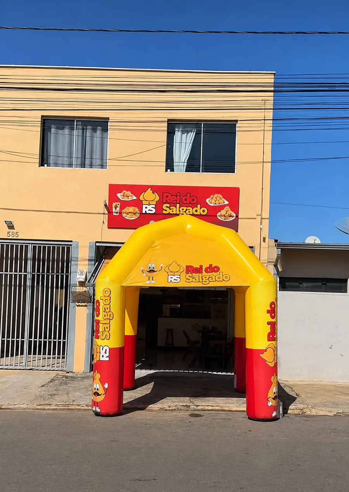
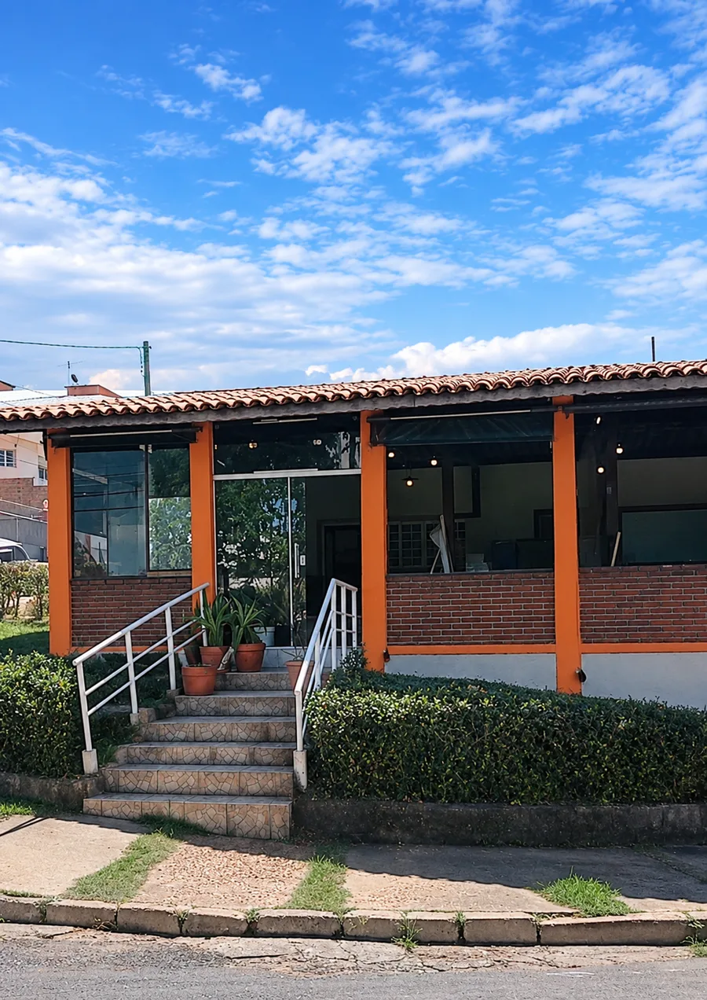
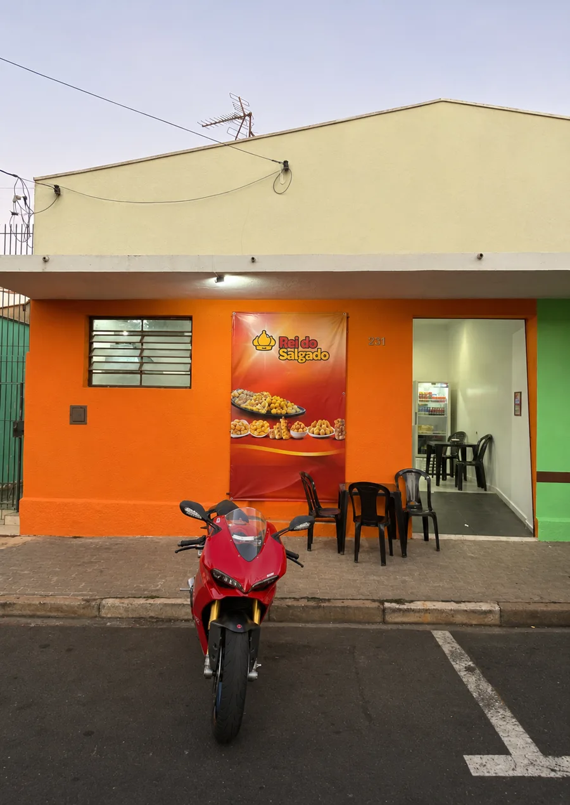
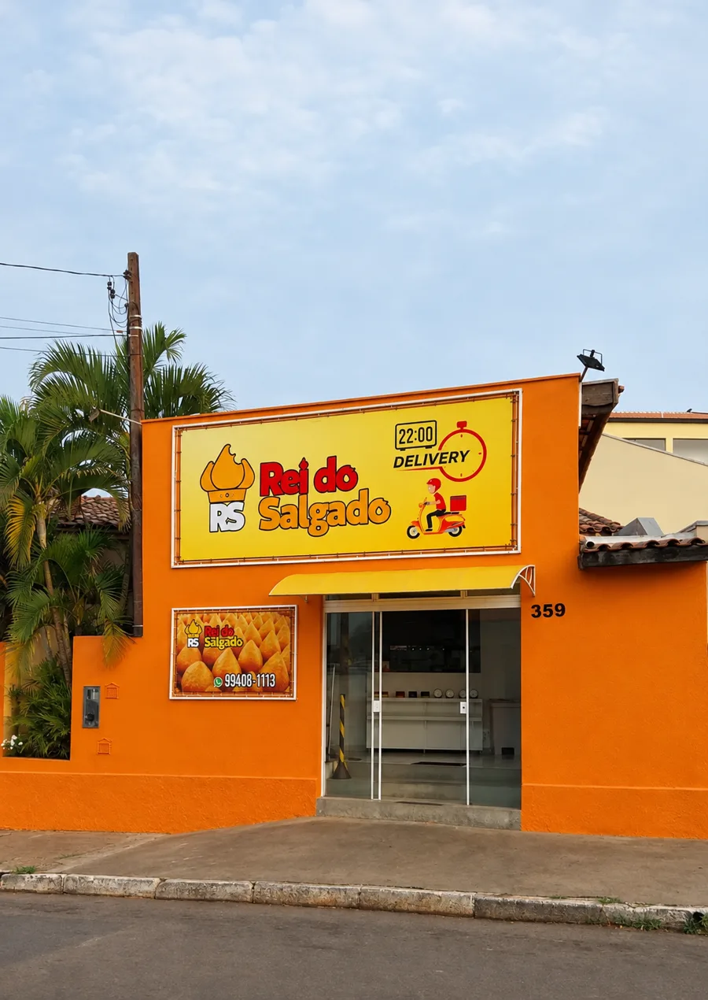
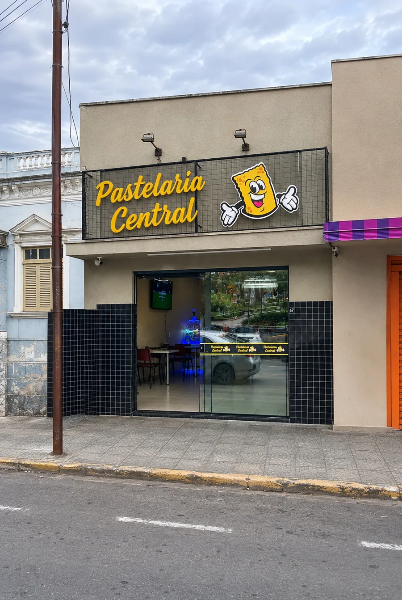

Presença real
De Rafard para diferentes cidades do interior paulista, nossos produtos chegam a lojas, parceiros e estabelecimentos que valorizam praticidade e qualidade.
Conhecer as regiõesLoja de Rafard
CNPJ 33.559.730/0001-86
Rei do Salgado pela região
Estes registros vieram da versão beta do projeto e mostram pontos de presença e parceiros. Eles não representam, por si só, uma lista de lojas próprias.





Entregas programadas
A disponibilidade e a programação de entrega variam conforme a cidade. A equipe confirma a rota, os produtos disponíveis e a melhor forma de atendimento para cada pedido.
Falar com Donizete